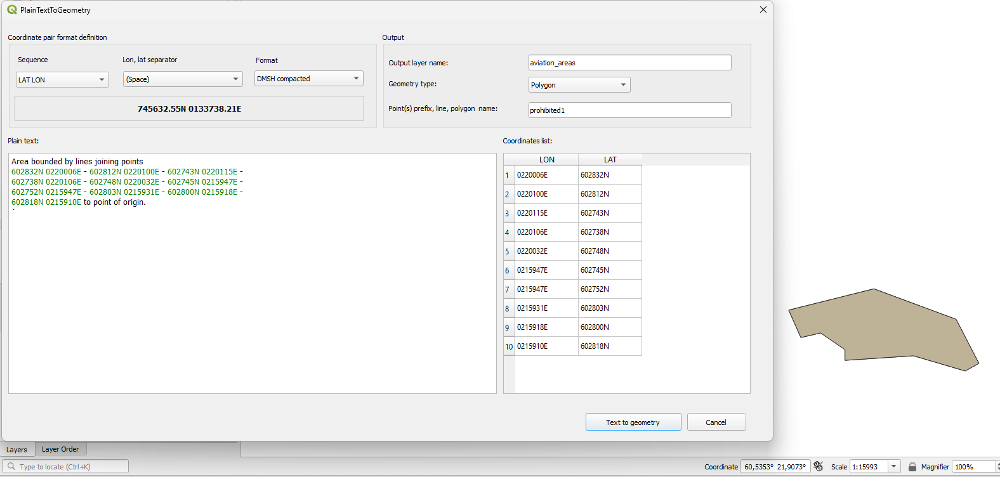

PlainTextToGeometry
Convert coordinates from plain text into GIS geometry directly in QGIS.
The problem
Geographic coordinates are often found inside technical documents, reports or aeronautical publications instead of structured GIS data. Turning this information into GIS features manually means copying, converting and entering coordinates one by one.
The solution
PlainTextToGeometry extracts coordinate pairs directly from text and creates points, lines or polygons in QGIS.
Value
Less manual work
Automates repetitive coordinate entry.
Faster data preparation
Converts textual information into GIS data with fewer manual steps.
Repeatable workflow
The same process can be reused for similar sources.
Fewer transcription errors
Reduces manual copying and re-entry.
